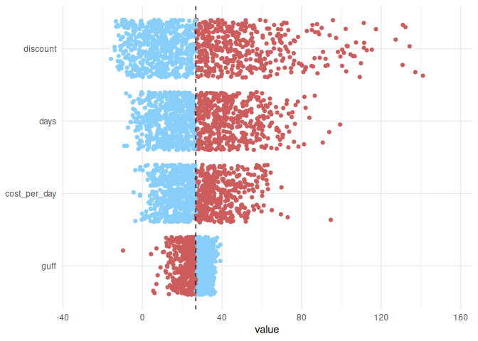
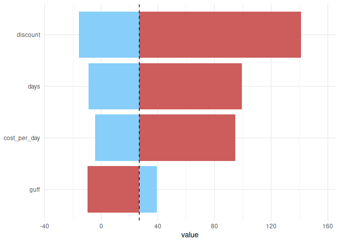

Experimental, demo package
Small wrapper package, primarily to demonstrate creation of tornado plots.
Installation
You can install the development version of tp from R-Universe via:
install.packages('tp', repos = c('https://timtaylor.r-universe.dev', 'https://cloud.r-project.org'))How to use
tp provides two main functions: tornado_samples() and tornado_plot().
The first of these, tornado_samples() takes:
- A user-supplied, vectorised, input function;
- A set of distributions you wish to draw from that have a one-to-one matching to the aforementioned function’s parameters. These must be from the distributions3 package.
- A number of samples to draw for each parameter.
The function is just a small wrapper around lapply that loops over a functions parameters, sampling one whilst fixing the others. In effect it just wraps a simple univariate sensitivity analysis, ensuring the output is formatted in a usable way for the later plot function. The output is a tibble with class tornado_samples and an additional attributes that gives the baseline value calculated when setting each argument to it’s distributions mean value.
library(tp)
set.seed(1)
# Function with desired arguments
# NOTE: MUST be vectorised by the user and return a scalar value
fun <- function(cost_per_day, days, discount, guff) {
10 * cost_per_day * days * discount - guff
}
# A distribution (from distributions3) for each function argument
distributions <- list(
cost_per_day = distributions3::Gamma(shape = 9, rate = 0.5),
days = distributions3::Gamma(shape = 5, rate = 1),
discount = distributions3::Beta(alpha = 2, beta = 40),
guff = distributions3::Gamma(shape = 8, rate = 0.5)
)
# Number of samples to take for each argument
samples <- 1000
# generate the samples for each parameter
(dat <- tornado_sample(samples, fun, distributions))
#> $cost_per_day
#> # A tibble: 1,000 × 5
#> cost_per_day days discount guff .result
#> <dbl> <dbl> <dbl> <dbl> <dbl>
#> 1 13.5 5 0.0476 16 16.2
#> 2 25.6 5 0.0476 16 45.0
#> 3 25.2 5 0.0476 16 44.1
#> 4 19.5 5 0.0476 16 30.4
#> 5 9.21 5 0.0476 16 5.92
#> 6 20.0 5 0.0476 16 31.5
#> 7 21.6 5 0.0476 16 35.4
#> 8 20.5 5 0.0476 16 32.9
#> 9 15.3 5 0.0476 16 20.3
#> 10 12.7 5 0.0476 16 14.1
#> # ℹ 990 more rows
#>
#> $days
#> # A tibble: 1,000 × 5
#> cost_per_day days discount guff .result
#> <dbl> <dbl> <dbl> <dbl> <dbl>
#> 1 18 7.73 0.0476 16 50.2
#> 2 18 2.69 0.0476 16 7.09
#> 3 18 4.65 0.0476 16 23.9
#> 4 18 2.56 0.0476 16 5.97
#> 5 18 2.76 0.0476 16 7.62
#> 6 18 2.19 0.0476 16 2.74
#> 7 18 5.84 0.0476 16 34.1
#> 8 18 3.45 0.0476 16 13.6
#> 9 18 8.31 0.0476 16 55.2
#> 10 18 4.47 0.0476 16 22.3
#> # ℹ 990 more rows
#>
#> $discount
#> # A tibble: 1,000 × 5
#> cost_per_day days discount guff .result
#> <dbl> <dbl> <dbl> <dbl> <dbl>
#> 1 18 5 0.0493 16 28.3
#> 2 18 5 0.0541 16 32.7
#> 3 18 5 0.0434 16 23.0
#> 4 18 5 0.0177 16 -0.0422
#> 5 18 5 0.0109 16 -6.23
#> 6 18 5 0.0551 16 33.6
#> 7 18 5 0.0179 16 0.0704
#> 8 18 5 0.0711 16 48.0
#> 9 18 5 0.0840 16 59.6
#> 10 18 5 0.0531 16 31.7
#> # ℹ 990 more rows
#>
#> $guff
#> # A tibble: 1,000 × 5
#> cost_per_day days discount guff .result
#> <dbl> <dbl> <dbl> <dbl> <dbl>
#> 1 18 5 0.0476 9.21 33.6
#> 2 18 5 0.0476 20.1 22.8
#> 3 18 5 0.0476 16.9 26.0
#> 4 18 5 0.0476 21.6 21.3
#> 5 18 5 0.0476 18.5 24.4
#> 6 18 5 0.0476 17.8 25.0
#> 7 18 5 0.0476 12.6 30.3
#> 8 18 5 0.0476 13.6 29.2
#> 9 18 5 0.0476 10.8 32.0
#> 10 18 5 0.0476 11.2 31.7
#> # ℹ 990 more rows
#>
#> attr(,"baseline")
#> [1] 26.85714
#> attr(,"output_name")
#> [1] ".result"
#> attr(,"class")
#> [1] "tornado_samples"tornado_plot() takes, as input, the output from tornado_sample() as well as a character string specifying the type of tornado plot to create (jitter or maxmin). The first of these simply plots the sample results against the corresponding distribution that varies. The second options plots the corresponding maximum and minimum values as a split bar chart.
tornado_plot(dat)
tornado_plot(dat, type = "maxmin")